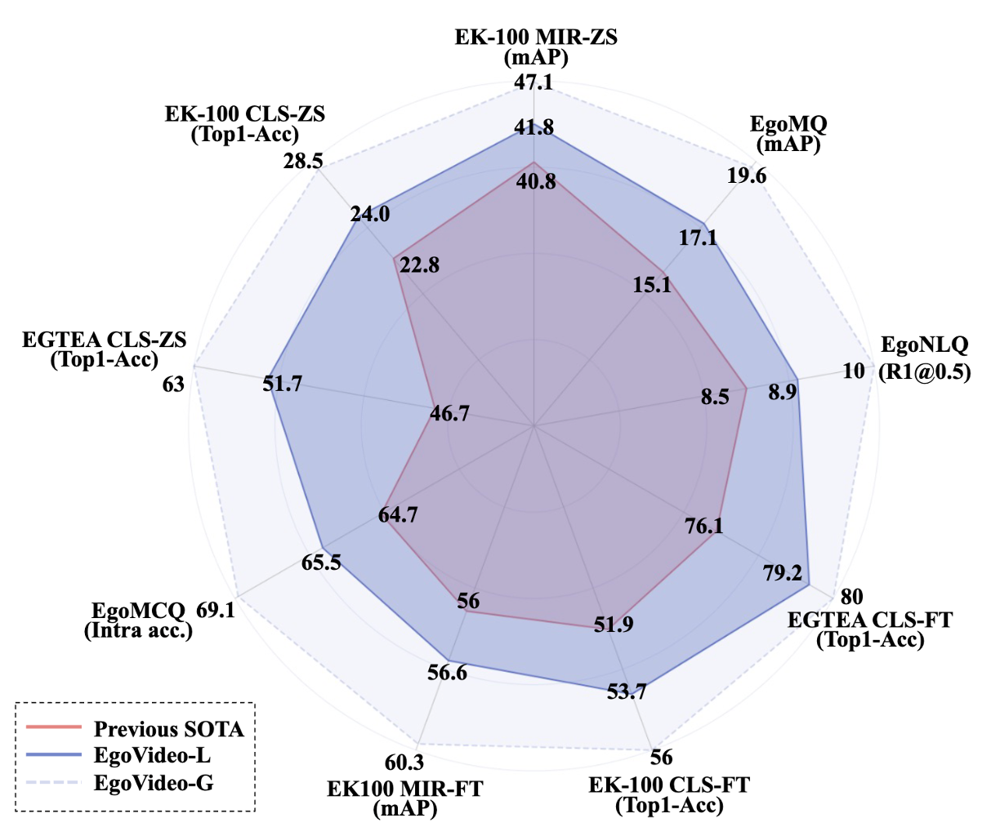
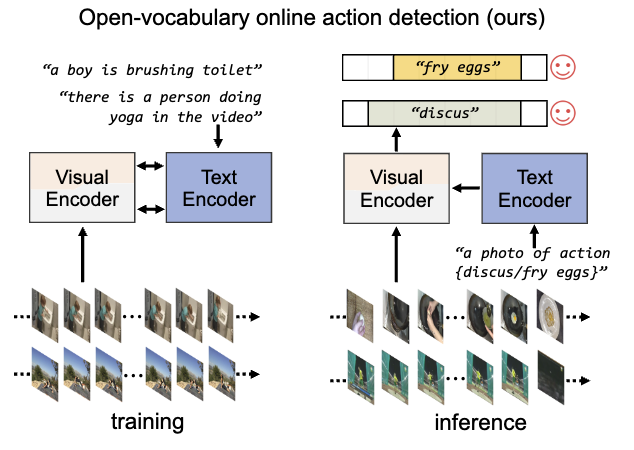
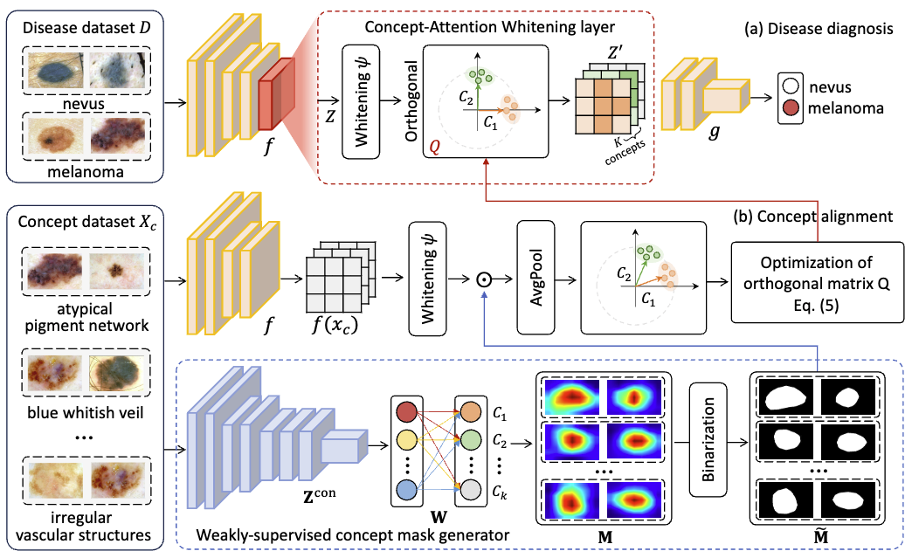
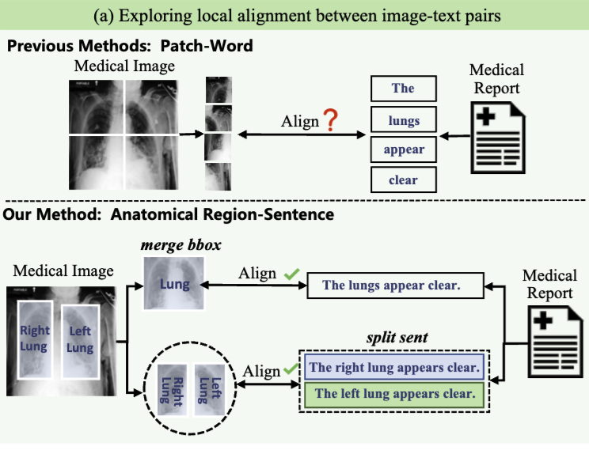

|
I am a final year PhD student at Fudan University, advised by Professor Yuejie Zhang. I also work closely with Professor Weidi Xie. My research focuses on multimodal machine learning, video understanding, and medical image analysis. I hope that someday medical AI agents would heal the world, make it a better place, for the entire human race.
Google Scholar /
Twitter /
GitHub /
Zhihu
|

|
|
|
|
|

|
Jilan Xu, Yifei Huang, Baoqi Pei, Junlin Hou, Qingqiu Li, Guo Chen, Yuejie Zhang, Rui Feng, Weidi Xie ICLR 2025 A cross-view video prediction model that predicts future egocentric video frames by leveraging paired exocentric video and text instructions. |
|  |
Baoqi Pei, Yifei Huang, Jilan Xu, Guo Chen, Yuping He, Lijin Yang, Yali Wang, Weidi Xie, Yu Qiao, Fei Wu, Limin Wang ICLR 2025 An egocentric video-language model that learns fine-grained egocentric video representations by modeling hand-object dynamics. |

|
Yifei Huang*, Guo Chen*, Jilan Xu*, Mingfang Zhang*, Baoqi Pei, Hongjie Zhang, Lu Dong, Yali Wang, Limin Wang, Yu Qiao, CVPR 2024 arXiv / project page / code A cross-view benchmark dataset that emulates the human demonstration following process, containing recorded egocentric videos guided by exocentric-view demonstration videos. |

|
Jilan Xu, Yifei Huang, Junlin Hou, Guo Chen, Yuejie Zhang, Rui Feng, Weidi Xie CVPR 2024 arXiv / project page / code Given an egocentric video, Egoinstructor automatically retrieves relevant exocentric instructional videos for assisting egocentric video captioning. |

|
Jilan Xu, Junlin Hou, Yuejie Zhang, Rui Feng, Yi Wang, Yu Qiao, Weidi Xie CVPR 2023 arXiv / project page / code Training open-vocabulary semantic segmentation models with image-text pairs only, which enables zero-transfer to various segmentation datasets. |

|
Jilan Xu, Junlin Hou, Yuejie Zhang, Rui Feng, Rui-Wei Zhao, Tao Zhang, Xuequan Lu, Shang Gao CVPR 2022 arXiv A weakly-supervised object localization model that generates better CAMs via soft-clustering algorithms. |
|  |
Qingsong Zhao, Yi Wang, Jilan Xu, Yinan He, Zifan Song, Limin Wang, Yu Qiao, Cairong Zhao NeurIPS 2024 arXiv A zero-shot online action detector that leverages vision-language models and enables open-world temporal understanding. |

|
Yi Wang, Kunchang Li, Yizhuo Li, Yinan He, Bingkun Huang, Zhiyu Zhao, Hongjie Zhang, Jilan Xu, Yi Liu, Zun Wang, Sen Xing, Guo Chen, Junting Pan, Jiashuo Yu, Yali Wang, Limin Wang, Yu Qiao Tech report 2022 arXiv / code A fundation model for video / video-text understanding, achieving SOTA over 30 benchmark datasets. |
|  |
Junlin Hou, Jilan Xu, Hao Chen MICCAI 2024 arXiv An XAI framework that aligns the axes of the latent space with concepts of interest for interpretable skin lesion diagnosis. |
|  |
Qingqiu Li, Xiaohan Yan, Jilan Xu, Runtian Yuan, Yuejie Zhang, Rui Feng, Quanli Shen, Xiaobo Zhang, Shujun Wang MICCAI 2024 arXiv An Anatomical Structure-Guided visual-text pre-training framework that leverages the anatomical knowledge. |

|
Junlin Hou, Jilan Xu, Nan Zhang, Yi Wang, Yuejie Zhang, Xiaobo Zhang, Rui Feng ECCV 2022 AIMIA Workshop arXiv / code A Transformer-based model with contrastive representation enhancement. Winner of the 2nd COVID-19 Detection in ECCV 2022. |

|
Xiaotong Li, Jilan Xu, Yuejie Zhang, Rui Feng, Rui-Wei Zhao, Tao Zhang, Xuequan Lu, Shang Gao IJCAI 2022, Oral paper Co-training a model for semi-supervised video polyp segmentation, achieving comparable results using only 15% labeled data. |

|
Junlin Hou*, Jilan Xu*, Rui Feng, Yuejie Zhang, Fei Shan, Weiya Shi ICCV 2021, AIMIA Workshop. paper / code A ResNest-50 model combined with contrastive mixup technique for 3D COVID-19 CT image classification. Winner of the 1st COVID-19 detection challenge. |

|
Jilan Xu, Junlin Hou, Yuejie Zhang, Rui Feng, Chunyang Ruan, Tao Zhang, Weiguo Fan BIBM 2020, Oral paper Introducing a self-supervised deformation representation learning technique for histopathology image analysis. |
|
|
|
Shanghai AI Laboratory
Research Intern
Supervised by Dr. Yifei Huang, Yi Wang and Prof. Yu Qiao
Bell AI Lab, Shanghai
Research Intern
Supervised by Dr. Chenhui Ye
Google Winter AI Camp
🏆 Best Presentation Award Winner
Morgan Stanley Technology
Software Engineering Intern
Supervised by Ray Zhou
|
|
Conference Reviewer : ICLR25, NeurIPS24, ECCV24, MICCAI24, CVPR24, CVPR23, ICCV23, NeurIPS22 Journal Reviewer : Nature Communications, TPAMI, IJCV, TMM, NeuroComputing TA : Data Structure, The Theory of Computation |
|
This guy is good at website design. |